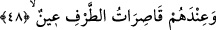
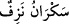
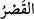
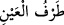
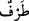
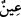
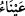

kurudu tükendi, demektir. “ ifadesi de buradan gelir. Yani sarhoşluğu
sebebiyle anlayışı tükendi, demektir. Sarhoşluk, baş ağrısı ve benzeri durumlar âyetin
baş tarafındaki “o şarapta sersemletme yoktur” hükmünde mevcut olduğu halde burada
ayrıca ve özellikle zikredilmesi, sarhoşluğun şarabın en büyük fesat ve kötülüklerinden
olmasındandır. Bu bakımından sarhoşluk sanki ayrı ve özel bir cins gibi mütalaa
edilmiştir. Mânâ şöyledir: Cennet şarabında sarhoşluk olmadığı gibi karın ağrısı, baş
ağrısı, sıtma ve arbede gibi herhangi bir fesat çeşidi veya ahlâk dışı bir durum da
mevcut değildir. Bu nedenle boş söz ve günaha sokan bir davranış olmaz.
Bahru’l-ulûm’da der ki: Hülasa dünya şarabında sarhoşluk, aklın gitmesi, düşmanlık,
kin, baş ağrısı, dini ve dünyevi hüsran gibi bir çok fesatlar vardır. Hatta şarap içen puta
tapan gibi kabul edilmiştir. Ayrıca dünya şarabında kusma ve üzerine idrar yapma gibi
fesatlar vardır. Yine şarap çoğu zaman savaş, vuruşma, zina, cinâyet, haksız yere adam
öldürme gibi vahim sonuçlar da doğurmaktadır. Bunların hepsi veya bir kısmı şarap
ehlinde müşâhede edilen hususlardandır. Halbuki bunların hiçbiri cennet şarabında
yoktur.
Bazı ârifler der ki: Bütün belâ, musibet, mâsiyet ve cinâyetler bizim kesâfet ve
yoğunluğumuzdan kaynaklanmaktadır. Şayet bu kesâfet ve yoğunluk olmasaydı, bize bu
kadar hastalıklar ve ağrılar ârız olmaz ve bizden akıl ve durumun çirkin saydığı şeyler
sâdır olmazdı. Âhiret âleminde ise hastalık olmadığı gibi kesafet ve yoğunluğa taalluk
eden bir şey de yoktur. Yine (dünyada) bu kesâfet olmasaydı mârifetullah hâsıl olmazdı.
Zira kesafet, manevî yükseliş ve düşüşün mihveridir. Bundan dolayı cismani kesafetleri
olmayan meleklerde bu anlamda bir yükseliş ve düşüş söz konusu değildir. Onlar hep
asli hilkat/yaratılış ve cibilliyetleri üzeredirler.
48. Yanlarında güzel bakışlarını yalnız onlara tahsis etmiş, iri gözlü eşler vardır.
Muhlas kulların “Yanlarında güzel bakışlarını yalnız onlara tahsis etmiş, iri gözlü
eşler vardır.
“ kelimesi hapsetmek, men etmek ve engellemek demektir.
“ gözün kirpiğidir. “ kirpiği hareket ettirmektir. Bu ifadeden bakmak,
göz atmak kastedilmiştir. Zira kirpiği hareket ettirmek, bakmanın ve göz atmanın
lâzımıdır, yani bakmayı gerektirir. Bazı tefsirlere göre âyetin mânâsı şu şekildedir:
gözlerini muhlas kullar olan kocalarına mıhlayan bu hanımlar, onların yerine başkalarını
arzulamazlar. Zira bu ihlasa erdirilmiş kullar, eşleri nezdinde çok güzeldirler ve bu
eşler de pek iffetlidirler.
“ kelimesi, bilindiği için zikredilmeyen mevsufun başka bir sıfatıdır. Güzel, geniş
ve iri gözlü mânâsındaki “ kelimesinin çoğuludur. Mânâsı: Gözleri ve kemikleri